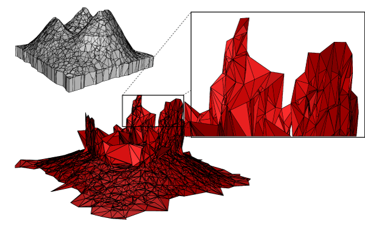

Digital terrain models (DTMs) are databases which represents in three dimensions the surface of the Earth or the seafloor. The use of new sensors such as laser-scanners means that the size of DTMs is continuously growing, and as a consequence we have difficulties analysing them with computers. To be processed, DTMs need to be simplified, which is often performed with methods that reduce them to two-dimensional objects. In this way, possible valuable information will be lost.
The proposed research project aims at investigating and developing new simplification algorithms that: (1) use 3D tools and 3D data structures; (2) permit us to define 3D features---valleys, peaks and ridges---and consider these while simplifying. The knowledge of the features will permit us---in an application-dependent way---to remove unimportant points and focus only on those of interest for a given application. The results of the project will permit us to automatically identify terrain features and to simplify, remove or even exaggerate them.
Methods and tools from the field of computational geometry will be used to model the terrain as a 3D object (the most important ones being the 3D Voronoi diagram and the medial axis transform in 3D, and appropriate data structure to store and manipulate these), to identify/select its features and to simplify it. Also, techniques and algorithms used in DTM analysis, such as surface networks as used in geomorphology, will be used.
The design of the new algorithms will lead to scientific contributions in the areas of terrain modelling (the first use of 3D techniques to model and simplify terrains) and 3D shape modelling (new techniques to identify terrain features).
We will develop a prototype, release under an open-source licence, where real-world DTMs can be simplified (features are identified and unnecessary points are removed). Because DTMs are nowadays ubiquitous in many application domains (city modelling, bathymetry, geology, etc.), having robust and efficient algorithms that select only application-dependent essential data out of a huge dataset, and an implementation of these in a prototype, would surely benefit the whole GIS community at large as in practice their size is a well-known bottleneck for their processing.
First, end-users will be able to apply different simplification rules related to their application domain, instead of using generic tools that do not consider the features of the terrain. Examples of end-users are: companies building new roads, companies making bathymetric maps, and farmers. All need to have a detailed model of their terrain, information regarding slopes, hills, canals, etc. At this moment, most practitioners cannot realistically use very large datasets since they are simply too big for them to process with a computer. We will target a few specific domains as test-cases, these are based on the users involved in the project. At this moment we have already an indication from potential users for the following subjects: city modelling, generation of bathymetric maps, and maintenance of waterways. The outcome of the research will be generic so that users can make use of the results and specify the simplification rules related to their application.
Second, data producers will be able to offer practitioners simplified DTMs, which can be further analysed with current tools (off-the-shelf GIS packages).
Third, the prototype developed will be used as proof of concepts so that software companies can implement themselves the ideas of using 3D tools for the simplification of DTMs.